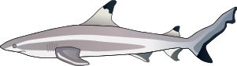
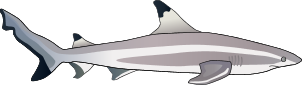

Records
- The smallest shark is a small cat shark (7 centimeters).
- The largest shark is the Megalodon (16 miles long).
- The fastest shark is the thresher shark (80 mph).
- The shark that travels the most in its life time is a female great white shark (12400) miles.
- There are 14 species with only one known shark of that species.
- The great white shark eats anything from tires to elephants.


The Megalodon has no real pictures taken of it but it has loads of evidence of it being real.